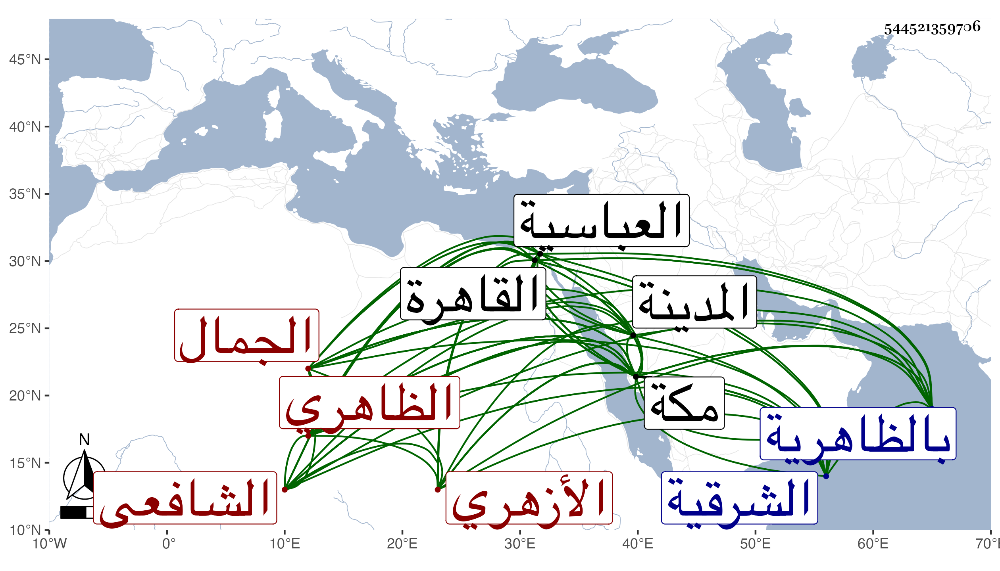

0902Sakhawi.DawLamic.ITO20230111-ara1.EIS1600.544521359706
Biography ID: 544521359706
180
عبد الله بن محمد بن أبي بكر بن عبد الرحمن الجمال الظاهري ثم الأزهري الشافعي نزيل مكة ويعرف بالظاهري . ولد تقريبا سنة سبع وثلاثين وثمانمائة بالظاهرية من الشرقية بالقرب من العباسية ونشأ بها ثم تحول إلى القاهرة بعد الخمسين فلازم خدمة إمام الأزهر وقرأ في المنهاج ولازم الزيني زكريا والطنتدائي الضرير وزاحم الطلبة وتوصل لبيت ابن البرقي بتعليم ولدي ولده وصار كبيرهم يصرفه في التوجه مع شقادف المنقطعين بدرب الحجاز التي من جهة ناظر الخاص للعقبة فما دونها ، وأقبل على التحصيل فكان يسافر مع الصر ويأتمنه الناس في استصحاب ودائعهم ومتاجرهم ونحوها معه ويخدم قاضي مكة بشراء ما يحتاج إليه من القاهرة وحمل ما يرسله لأهلها وتزايد اختصاصه به فاتسعت دائرته سيما حين تولى زكريا القضاء ولكنه لما رأى الاختلاف والاختلال في جماعته واختصاص من شاء الله منهم عنه قطن مكة من سنة ثمان وثمانين وصار يتجر بجاه القاضي ويعامل ويعارض ونحو ذلك من طرق الاستكثار وتزايد خوفه حين الترسيم على جماعة القاضي وصار خائفا يترقب سيما وكان يكثر من قوله أن معه أموال اليتامى أو نحو ذلك مما يبعد به عن نفسه الكثرة أو هو على حقيقته ، ثم أنه تحول إلى المدينة النبوية واشترى بها حديقة وصار يعامل ويضارب كعادته وكان ابتداء تردده لمكة من سنة أربع وستين ، وهو في اليبس بمكان إلا مع من يتوصل منه أو به للدنيا الخسيسة الشأن .
